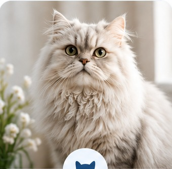
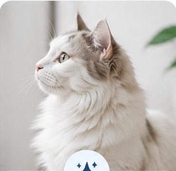
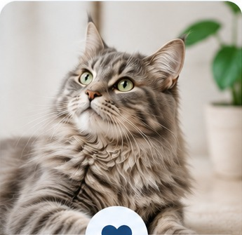
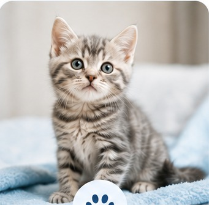
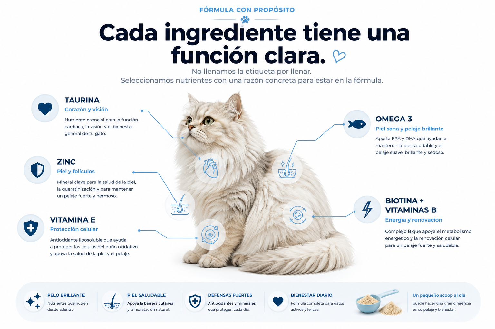

Pelo largo
Persas, Maine Coon y otras razas de manto abundante.
Una fórmula en polvo con nutrientes esenciales para acompañar la salud general, la piel y el pelaje de tu gato todos los días.
Pensado para acompañar una alimentación completa, no para sustituirla.

Persas, Maine Coon y otras razas de manto abundante.

Para apoyar brillo, suavidad y una apariencia saludable.

Nutrición complementaria para gatos adultos.

Como apoyo adicional junto con una dieta completa.
Omega 3, zinc y vitamina E acompañan procesos relacionados con la integridad de la piel.
Zinc, biotina y vitaminas B participan en el metabolismo normal de piel y folículos.
La taurina es un nutriente esencial y forma parte del bienestar integral del gato.

Usa el peso ideal del gato, especialmente si tiene sobrepeso.
Durante los primeros días ofrece media dosis para que se acostumbre.
Combínalo con alimento húmedo o croquetas ligeramente humedecidas.
La constancia importa más que dar una cantidad mayor.
No. Está diseñado para complementar una dieta completa y balanceada.
La alimentación principal debe ser una dieta formulada para reproducción o crecimiento. Consulta al veterinario antes de añadir suplementos.
No. Puede usarse en gatos de cualquier raza.
Muchos gatos rechazan cambios visibles sobre sus croquetas; mezclarlo mejora la experiencia.
Una fórmula diaria, práctica y pensada específicamente para gatos.